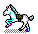
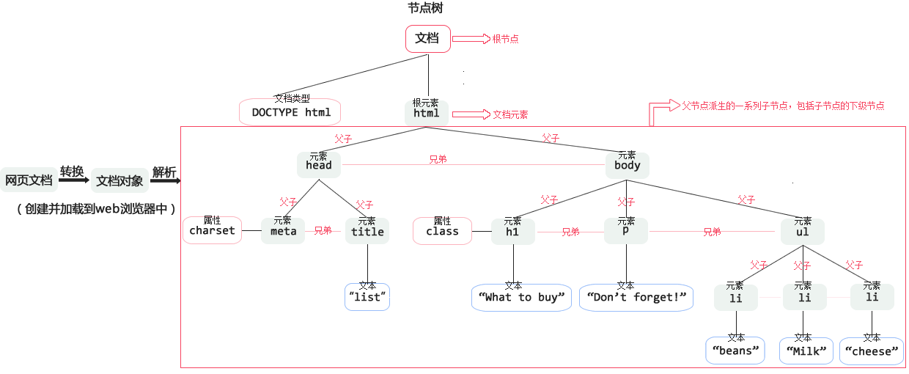
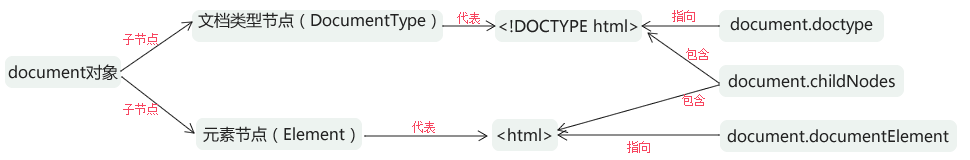

 DOM概述
DOM是文档对象模型（Document Object Model）的简称，它的基本思想是把结构化文档（比如HTML和XML）解析成一系列的节点，再由这些节点组成一个树状结构。所有的节点和最终的树状结构，都有规范的对外接口，以达到使用编程语言操作文档的目的（增删改）。所以，DOM可以理解成文档的编程接口（API）。
本章介绍的就是JavaScript对DOM标准的实现和用法。
文档：DOM中的"D"：
如果没有document（文档），DOM也就无从谈起。
创建一个网页——>加载到Web浏览器中——>DOM就在幕后悄然而生。它把你编写的网页文档转换为一个文档对象。
对象：DOM中的"O"：
document对象的主要功能就是处理网页内容。
模型：DOM中的"M"：
DOM把文档表示成一颗节点树（模型）。
<!DOCTYPE html>
<html>
<head>
<meta charset="utf-8" />
<title>list</title>
</head>
<body>
<h1 class="title">What to buy</h1>
<p>Don't forget!</p>
<ul>
<li>beans</li>
<li>cheese</li>
<li>Milk</li>
</ul>
</body>
</html>

1.Node节点对象
DOM的最小单位是节点（node）。文档是由节点构成的集合。
节点的类型：
在DOM里有许多不同类型的节点，很多类型的DOM节点包含着其他类型的节点。
| 节点 |
节点类型 |
代表 |
eg |
nodeType |
nodeName |
nodeValue |
| DOCUMENT_NODE |
文档节点 |
整个文档 |
window.document |
9 |
#document |
null |
| ELEMENT_NODE |
元素节点 |
HTML元素 |
<body>、<ul> |
1 |
大写的HTML元素名 |
null |
| ATTRIBUTE_NODE |
属性节点 |
HTML元素的属性 |
class=”title” |
2 |
等同于Attr.name |
属性值 |
| TEXT_NODE |
文本节点 |
HTML文档中出现的文本 |
What to buy |
3 |
#text |
文本内容 |
| DOCUMENT_FRAGMENT_NODE |
文档碎片节点 |
文档的片段 |
|
11 |
#document-fragment |
null |
| DOCUMENT_TYPE_NODE |
文档类型节点 |
文档的类型 |
<!DOCTYPE html> |
10 |
等同于DocumentType.name |
null |
浏览器原生提供一个Node对象，上面所有类型的节点都是Node对象派生出来的，也就是说它们都继承了Node的属性和方法。
1.1 Node对象的属性
- nodeType——节点的常量值——用于表明节点类型
- nodeName——节点的名称
- nodeValue——节点的值
- childNodes——返回父节点的所有子节点
- children——返回父元素HTML元素类型的子节点
- firstChild——第一个子节点。
- lastChild——最后一个子节点。
- nextSibling——下一个同级节点。
- parentNode——父节点。
- previousSibling——上一个同级节点。
- firstElementChild——第一个类型为HTML元素的子节点。
- lastElementChild——最后一个类型为HTML元素的子节点。
- nextElementSibling——下一个类型为HTML元素的同级节点。
- previousElementSibling——上一个类型为HTML元素的同级节点。
（1）nodeName属性和nodeType属性
通常来说，使用nodeType属性确定一个节点的类型，比较方便。
（2）nodeValue属性
该属性的作用主要是提取文本节点的内容。
（3）childNodes属性和children属性
| 属性 |
返回 |
返回对象的成员 |
空 |
tips
| childNodes |
一个NodeList对象 |
父节点的所有子节点 |
父对象不包括任何子对象,返回一个空对象 |
childNodes属性和children属性返回的节点都是动态的。
一旦原节点发生变化，立刻会反映在返回结果之中。 |
| children |
一个类似数组的对象 |
HTML元素类型的子节点 |
没有HTML元素类型的子节点,返回一个空数组 |
*NodeList是一种类似数组的对象，用于保存一组有序的节点，可通过位置访问，有length属性。
1.2 Node对象的方法
| 方法 |
|
参数 |
eg |
| appendChild() |
在父节点的结尾插入子节点 |
元素节点、子节点 |
parentNode.appendChild(childNode) |
|
| insertBefore() |
在父节点的指定位置插入子节点 |
接受两个参数，
第一个参数是所要插入的子节点，
第二个参数是父节点下方的另一个子节点，
新插入的子节点将插在这个节点的前面。 |
parentNode.appendChild(childNode1,childNode2) |
| removeChild() |
从父节点移除一个子节点 |
子节点 |
parentNode.removeChild(childNode) |
| replaceChild（） |
将一个新的节点，替换父节点的某一个子节点 |
它接受两个参数，
第一个参数是用来替换的新节点，
第二个参数将要被替换走的子节点。 |
parentNode.replaceChild(childNode1,childNode2); |
| cloneNode() |
克隆一个节点 |
布尔值 |
Node.cloneNode(true) |
| hasChildNodes() |
判定一个节点是否有子节点 |
|
|
| contains() |
检查一个节点是否为另一个节点的子节点 |
|
|
| isEqualNode |
检查两个节点是否相等 |
|
|
| compareDocumentPosition() |
对比两个节点的文档位置 |
|
|
1.3 NodeList对象
当使用querySelectorAll()方法选择一组对象时，会返回一个NodeList对象（比如document.querySelectorAll('*')的返回结果）或者HTMLCollection对象（比如document.scripts）。它们是类似数组的对象，即可以使用length属性，但是不能使用pop或push之类数组特有的方法。
2. document对象
document对象是文档的根节点，window.document属性就指向这个对象。也就是说，只要浏览器开始载入HTML文档，这个对象就开始存在了，可以直接调用。

2.1 document对象的属性
| 分类 |
属性 |
释义 |
eg |
| （1）提供文档信息的属性 |
title |
文档的标题 |
document.title
document.URL
document.lastModified
document.referrer
document.compatMode
|
| URL |
文档的URL |
| lastModified |
文档文件的上一次修改时间 |
| referrer |
文档的访问来源
当前网页的超链接所在网页的URL |
| compatMode |
浏览器处理文档的模式 |
| （2）指向其他节点或对象的属性 |
doctype |
指向文档类型节点 |
document.doctype //<!DOCTYPE html>
document.documentElement //<html>...</html>
document.head //<head>...</head>
document.body //<body>...</body>
document.activeElement
document.defaultView //window
document.implementation
|
| documentElement |
指向html元素节点 |
| head |
指向文档的head元素节点 |
| body |
指向文档的body元素节点 |
| activeElement |
指向文档中被激活（focused/active）的元素。 |
| defaultView |
指向当前文档的JavaScript顶层对象，即window对象 |
| 浏览器支持的模块信息 |
implementation |
该属性指向一个对象，提供浏览器支持的模块信息 |
document.implementation.hasFeature('MutationEvents','2.0')
// true |
2.2 特定元素的集合属性
| 属性 |
释义 |
eg |
tips |
| document.all |
文档中所有的元素，Firefox不支持该属性。 |
document.all
document.forms
document.images
document.links
document.scripts
document.styleSheets
|
所有的元素集合都是动态的，
原节点有任何变化，立刻会反映在这些集合中。 |
| document.forms |
所有的form元素。 |
| document.images |
所有的images元素。 |
| document.links |
所有的a元素。 |
| document.scripts |
所有的script元素。 |
| document.styleSheets |
所有的link或者style元素 |
2.3 document对象的方法
（1）querySelector方法和getElementById方法
| 作用 |
方法 |
释义 |
参数 |
eg |
| 获取 |
querySelector()方法 |
用于获取一个Element节点 |
参数使用CSS选择器语法
(如果有多个节点满足条件，
则返回第一个匹配的节点。)
null |
<h1 id="til">What to buy</h1>
document.querySelector("h1");
document.getElementById("til")； |
| getElementById()方法 |
参数是HTML标签元素的id属性 |
（2）querySelectorAll方法、getElementsByTagName方法和getElementsByClassName方法
| 作用 |
方法 |
释义 |
参数 |
不同1 |
不同2 |
eg |
| 获取 |
querySelectorAll()方法 |
返回一个NodeList对象
(返回一组符合条件的节点对象) |
参数使用CSS选择器 |
参数是字符串“*”，
返回文档中的所有HTML元素节点
[] |
NO |
<ul>
<li class="item">beans</li>
<li class="item">cheese</li>
<li class="item">Milk</li>
</ul>
document.querySelectorAll('li');
document.getElementsByTagName('li');
document.getElementsByClassName('item');
|
| getElementsByTagName() |
参数是HTML元素名
| 返回的是对象的指针，
当对象发生变化时，
返回的结果集会跟着变化 |
| getElementsByClassName() |
参数是HTML标签元素的class属性 |
NO |
（3）getElementsByName()方法
getElementsByName方法用于选择拥有name属性的HTML元素，比如form、img、frame、embed和object。
（4）createElement方法和createTextNode方法
| 作用 |
方法 |
释义 |
参数 |
eg |
| 创建 |
createElement()方法 |
创建一种HTML元素 |
字符串：等同于元素节点的tagName属性 |
var elementNode = document.createElement("li");
var textNode = document.createTextNode("eg!");
var UL = document.getElementsByTagName("ul")[0];
elementNode.appendChild(textNode);
UL.appendChild(elementNode);
<ul>
<li class="item">beans</li>
<li class="item">cheese</li>
<li class="item">Milk</li>
<li>eg!</li>
</ul>
|
| createTextNode()方法 |
创建文本 |
所要生成的文本节点的内容 |
|
（5）hasFocus方法
hasFocus()方法返回一个布尔值，表示当前文档之中是否有元素被激活或获得焦点。
* querySelector,querySelectorAll兼容性： IE8(含) 以上版本、 Firefox、 Chrome、Safari、Opera。
3. Element对象
Element对象特有的属性：
| 属性 |
释义 |
eg |
tips |
| innerHTML |
读取或设置某个节点内的HTML代码 |
<p id="myP" class="one two three"><span>Don't forget!</span></p>
var P = document.getElementById("myP");
P.innerHTML; //<span>Don't forget!</span>
P.outerHTML;
//<p id="myP" class="one two three"><span>Don't forget!</span></p>
P.textContent; //Don't forget!
P.innerText; //Don't forget!
P.outerText; //Don't forget!
|
|
| outerHTML |
读取或设置HTML代码时，会把节点本身包括在内 |
|
| innertext |
返回该节点的HTML标签名，
与nodeName属性相同 |
|
| outerText |
返回一个数组，
数组成员就是Element元素包含的每一个属性节点对象 |
|
| textContent |
读取或设置节点包含的文本内容 |
通常用于剥离HTML标签 |
| firstElementChild |
第一个子元素 |
<ul id="myUL">
<li>beans</li>
<li>cheese</li>
<li>Milk</li>
</ul>
var UL = document.getElementById("myUL");
var LI = document.getElementsByTagName("li");
UL.firstElementChild; // <li>beans</li>
UL.lastElementChild; //<li>Milk</li>
LI[0].nextElementChild; //<li>cheese</li>
LI[1].previousElementChild; //<li>beans</li>
UL.childElementCount; //3
|
|
| lastElementChild |
最后一个子元素 |
|
| nextElementSibling |
同级下一个element节点 |
|
| previousElementSibling |
同级上一个element节点 |
|
| childElementCount |
元素子节点数目 |
|
| tagName |
返回该节点的HTML标签名，
与nodeName属性相同 |
<div id="myDIV">Some example text</div>
var DIV = document.getElementById("myDIV");
DIV.tagName; //DIV
DIV.nodeName; //DIV
|
|
| dataset |
|
|
|
| attributes |
返回一个数组，数组成员就是Element元素包含的每一个属性节点对象 |
<input id="myInput" name="myInput" type="text" />
var INPUT = document.getElementById("myInput");
var atts = INPUT.attributes;
for (var i = 0; i < atts.length; i++) {
atts[i].nodeName+'：'+atts[i].nodeValue;
};
//id：myInput
//name：myInput
//type：text
|
|
3.1 className属性和classList属性
| element属性 |
释义 |
不同 |
eg |
| className |
返回HTML元素的class属性 |
返回一个字符串，每个class之间用空格分割 |
<p id="myP" class="one two three">Don't forget!</p>
var P = document.getElementById("myP");
P.className; //one two three
var classList = P.classList;
for (var i = 0; i < classList.length; i++) {
classList[i];
};
//one
//two
//three
|
| classList |
classList属性则返回一个类似数组的对象,
每个class就是这个对象的一个成员 |
| classList的方法 |
释义 |
eg |
| add() |
增加一个class |
P.classList.add("newClass");
//<p id="myP" class="one two three newClass">Don't forget!</p>
P.classList.remove("one");
//<p id="myP" class="two three newClass">Don't forget!</p>
P.classList.contains("newClass");
//true
P.classList.item(0);
//two
P.classList.toString();
//two three newClass
|
| remove() |
移除一个class |
| contains() |
检查该DOM元素是否包含某个class |
| toggle() |
将某个class移入或移出该DOM元素 |
| item() |
返回列表中某个特定位置的class |
| toString() |
将class的列表转为字符串 |
3.2 dataset属性
<div id="myDiv" data-id="myId"></div>
var id = document.getElementById("myDiv").dataset.id;
document.getElementById("myDiv").dataset.id = "hello";
3.3 页面位置相关属性
| 分类 |
方法 |
释义 |
eg |
| (1)相对位置 |
offsetParent |
|
<div id="myDIV">Some example text</div>
var DIV = document.getElementById("myDIV");
DIV.offsetParent; //body
DIV.offsetLeft;
DIV.offsetTop;
IV.clientWidth;
DIV.clientHeight;
DIV.scrollWidth;
DIV.scrollHeight;
DIV.scrollLeft;
DIV.scrollTop;
|
| offsetLeft |
|
| offsetTop |
|
| (2)元素高宽 |
clientWidth |
|
| clientHeight |
|
| (3)滚动宽高 |
srcollWidth |
|
| scrollHeight |
|
| (4)滚动位置 |
scrollLeft |
|
| scrollTop |
|
3.4 style属性
3.5 Element对象的方法
| 分类/释义 |
方法 |
eg |
（1）选择子元素的方法
(只用于选择Element对象的子节点
因此，可以采用链式写法来选择子节点) |
querySelector() |
<ul id="myUL">
<li class="item">beans</li>
<li class="item">cheese</li>
<li class="item">Milk</li>
</ul>
var UL = document.getElementById("myUL");
UL.getElementsByTagName("li");
UL.querySelector("li");
UL.querySelectorAll("li");
UL.getElementsByClassName("item");
|
| querySelectorAll() |
| getElementsByTagName() |
| getElemntByClassName() |
| (2)通过坐标选元素 |
elementFromPoint() |
| (3)HTML元素的属性相关方法 |
hasAttribute() |
<div id="myDIV" title="123">123</div>
var DIV = document.getElementById("myDIV");
DIV.hasAttribute("name"); //false
DIV.getAttribute("title"); //123
DIV.setAttribute("class","123");
//<div id="myDIV" title="123" class="123">123</div>
DIV.removeAttribute("title");
//<div id="myDIV" class="123">123</div>
|
| getAttribute() |
| setAttribute() |
| removeAttribute() |
(4)返回一个布尔值，
表示Element对象是否符合某个CSS选择器 |
matchesSelector()
mozMatchesSelector()
webkitMatchesSelector()
oMatchesSelector()
msMatchesSelector() |
document.querySelector('li').matchesSelector('li:first-child')
//true
|
| (5)用于将一个可滚动元素滚动到可见区域 |
scrollIntoView() |
document.querySelectorAll('li').scrollIntoView()
|
3.6 insertAdjacentHTML方法
insertAdjacentHTML方法可以将一段字符串，作为HTML或XML对象，插入DOM。
insertAdjacentHTML方法接受两个参数，第一个是插入的位置，第二个是插入的节点字符串。关于插入的位置，可以取下面四个值。
beforebegin：在指定元素之前插入，变成它的同级元素。
afterbegin：在指定元素的开始标签之后插入，变成它的第一个子元素。
beforeend：在指定元素的结束标签之前插入，变成它的最后一个子元素。
afterend：在指定元素之后插入，变成它的同级元素。
//before
<div id="box1">
<p>Some example text</p>
</div>
<div id="box2">
<p>Some example text</p>
</div>
//javascript
var box2 = document.getElementById("box2");
box2.insertAdjacentHTML('beforebegin', '<div><p>This gets inserted.</p></div>');
//after
<div id="box1">
<p>Some example text</p>
</div>
<div><p>This gets inserted.</p></div>
<div id="box2">
<p>Some example text</p>
</div>
* insertAdjacentHTML方法比innerHTML方法效率高，因为它不是彻底置换现有的DOM结构。所有浏览器都支持这个方法，包括IE 6。
3.7 getBoundingClientRect方法
回一个记录了位置信息的对象，用于获取HTML元素相对于视口（viewport）左上角的位置以及本身的长度和宽度。
var box = document.getElementById('box');
var x1 = box.getBoundingClientRect().left;
var y1 = box.getBoundingClientRect().top;
var x2 = box.getBoundingClientRect().right;
var y2 = box.getBoundingClientRect().bottom;
var w = box.getBoundingClientRect().width;
var h = box.getBoundingClientRect().height;
3.8 table元素
方法：
| 方法 |
释义 |
| insertRow() |
在指定位置插入一个新行（tr） |
| deleteRow() |
在指定位置删除一行（tr） |
| insertCell() |
在指定位置插入一个单元格（td） |
| deleteCell() |
在指定位置删除一个单元格（td） |
| createCaption |
插入标题 |
| deleteCaption |
删除标题 |
| createTHead() |
插入表头 |
| deleteTHead() |
删除表头 |
属性：
| 属性 |
释义 |
| caption |
标题 |
| tHead |
表头 |
| tFoot |
表尾 |
| rows |
行元素对象，该属性只读 |
| rows.cell |
每一行的单元格对象，该属性只读 |
| tBodies |
表体，该属性只读 |
4. Text节点
文档中的文本对应Text节点，通常使用Element对象的firstChild、nextSibling等属性获取文本节点，或者使用document对象的createTextNode方法创造一个文本节点。
// 获取文本节点
var textNode = document.querySelector('p').firstChild;
// 创造文本节点
var textNode = document.createTextNode('Hi');
document.querySelector('div').appendChild(textNode);
* 由于空格也是一个字符，所以哪怕只有一个空格，也会形成文本节点。
4.1 文本节点的属性
除了继承的属性，文本节点自身主要的属性是data，它等同于nodeValue属性，用来返回文本节点的内容。
document.querySelector('p').firstChild.data
document.querySelector('p').firstChild.nodeValue
4.2 文本节点的方法
| 分类 |
方法 |
释义 |
eg |
| （1）文本编辑方法 |
appendData() |
在文本尾部追加字符串 |
|
| insertData() |
在文本中插入字符串 |
| deleteData() |
删除子字符串 |
| replaceData() |
替换文本 |
| subStringData() |
获取子字符串 |
| （2）文本的分割与合并 |
splitText() |
将文本节点一分为二 |
|
| normalize() |
将毗邻的两个文本节点合并 |
DocumentFragment节点代表一个完整的DOM树形结构，但是不属于当前文档，只存在于内存之中。操作DocumentFragment节点，要比直接操作文档快得多。它就像一个文档的片段，一般用于构建一个子结构，然后插入当前文档。
document对象的createDocumentFragment方法可以创建DocumentFragment节点，然后再可以使用其他DOM方法，添加子节点。
var docFrag = document.createDocumentFragment();
var li = document.createElement("li");
li.textContent = "Hello World";
docFrag.appendChild(li);
document.queryselector('ul').appendChild(docFrag);
上面代码创建了一个DocumentFragment节点，然后将一个li节点添加在它里面，最后将DocumentFragment节点移动到原文档。
一旦DocumentFragment节点被添加进原文档，它自身就变成了空节点（textContent属性为空字符串）。如果想要保存DocumentFragment节点的内容，可以使用cloneNode方法。
document.queryselector('ul').(docFrag.cloneNode(true));
CSS操作
常用的属性和方法的浏览器兼容性
DOM1，DOM2，DOM3